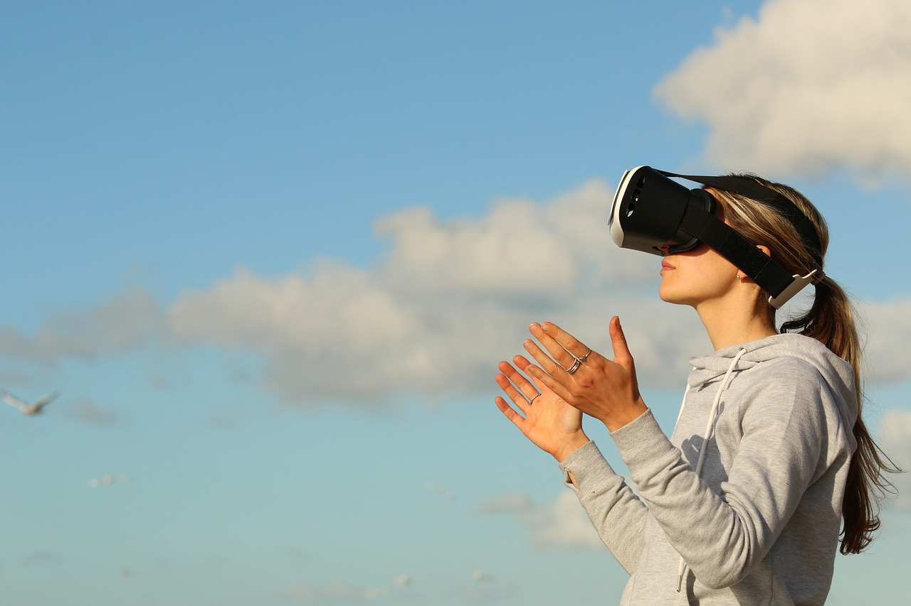

What is VR?
It is a way in which people can interact with things other than the real world ,they do so by using different tools.Virtual reality is not something very familiar to us, it is a new and innovative form technology. Virtual reality is so much more advanced. You get the chance to enter the virtual world and do things that involves your senses like touching, grabbing etc. (Zheng, Chan& Gibson, 1998, Guttentag, 2010).
The popularity is increasing amongst people in the world. We are not all certain, clear and fully educated as of what virtual reality is. If you want to explore new experiences with technology, virtual reality will be perfect.
It gives the sense that you are actually living the moment, it feels physically real and allows you to live in that scene. It is a great way for people to create their own world but experiencing it in the 3D world. Virtual reality is far from an illusion yet it is brain activity, it gives the feeling of reality, we are free to interact through the tool provided such as a VR headset.
There are many uses and advantages of virtual reality and I believe it may be able to resolve some problems faced in our country. Coolest thing is that you can live out and face fears. The little world you get placed into feels real and you are literally living in that world for as long as you use the necessary tools.
The world around us is advancing and we are heading into the fourth industrial revolution that means technology will become so much more important and needed in our daily lives. VR is just one way in which we will experience technology, this mechanism is so useful and it brings or gives you the ability to see yourself in a specific environment, which advances your experience and can be a very fun journey.